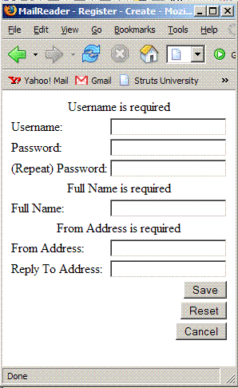

Impatient? Try our Bootstrap Tutorial
Impatient? Try our Bootstrap Tutorial and the MailReader Tour
and the MailReader Tour .
.
Apache Struts 2 is an elegant, extensible framework for building enterprise-ready Java web applications. Distributions of Struts 2 are available as a free download under the Apache License.
are available as a free download under the Apache License.
- For more about the Apache Struts project, visit the project web site
 .
. - For more about Struts Plugins, visit the Struts 2 Plugin Registry.
- For other community-supported Struts resources, visit the Struts 2 Wiki.
Getting Started
The documentation is grouped into three areas.
| Tutorials | Our tutorials are designed to help you get started with the framework ASAP. We offer an all-purpose "Bootstrap" tutorial as well as specialty tutorials on portlets and database access. |
|---|---|
| Guides | Our in-depth guides focus on specific components of the framework, such as the Core framework, Struts Tags, and optional Extensions, as well as migrating from Struts 1 or WebWork 2. |
| FAQs | Our FAQs provide a wide range of rapid-fire "HOWTOs" in question-and-answer format. |
 An overview of all three areas is available.
An overview of all three areas is available.
Apache Struts 2 Architecture in a Nutshell
 |
|
Struts Tags in a nutshell
The Struts Tags help you create rich web applications with a minimum of coding. Often, much of the coding effort in a web application goes into the pages. The Struts Tags reduce effort by reducing code.
<% User user = ActionContext.getContext() %> <form action="Profile_update.action" method="post"> <table> <tr> <td> align="right"<label>First name:</label></td> <td><input type="text" name="user.firstname" value="<%=user.getFirstname() %> /></td> </tr> <tr> <td> <input type="radio" name="user.gender" value="0" id="user.gender0" <% if (user.getGender()==0) { %> checked="checked" %> } %> /> <label for="user.gender0">Female</label> ...
Looking over the markup, it's easy to see why Java web development without the aid from a modern framework is hard! So far, we've only coded two controls, and there are six more to go! Let's rewrite and finish the form using Struts Tags.
|  | After Struts Tags (a complete form) <s:actionerror/> <s:form action="Profile_update" validate="true"> <s:textfield label="Username" name="username"/> <s:password label="Password" name="password"/> <s:password label="(Repeat) Password" name="password2"/> <s:textfield label="Full Name" name="fullName"/> <s:textfield label="From Address" name="fromAddress"/> <s:textfield label="Reply To Address" name="replyToAddress"/> <s:submit value="Save" name="Save"/> <s:submit action="Register_cancel" value="Cancel" name="Cancel" onclick="form.onsubmit=null"/> </s:form>
|
Struts Configuration in a Nutshell
A web application uses a deployment descriptor to initialize resources like filters and listeners. The web deployment descriptor is formatted as a XML document and named web.xml. Struts can either initializes its resources by scanning your classes using Java packages declared in this web.xml file, or you can have full control over the configuration via a configuration file, named struts.xml. These resources include action mappings, to direct input to server-side Action classes, and result types, to select output pages.
Here's a typical configuration (struts.xml) for a login workflow:
<struts>
<package name="default" extends="struts-default">
<action name="Logon" class="mailreader2.Logon">
<result name="input">/pages/Logon.jsp</result>
<result name="cancel" type="redirect-action">Welcome</result>
<result type="redirect-action">MainMenu</result>
<result name="expired" type="chain">ChangePassword</result>
</action>
<action name="Logoff" class="mailreader2.Logoff">
<result type="redirect-action">Welcome</result>
</action>
</package>
</struts>
 The framework provides general-purpose defaults, so we can start using Struts right away, "out of the box". Any factory defaults can be overridden in an application's configuration, as needed.
The framework provides general-purpose defaults, so we can start using Struts right away, "out of the box". Any factory defaults can be overridden in an application's configuration, as needed.
Struts MVC in a Nutshell
Struts is a Model View Controller framework. Struts provides Controller and View components, and integrates with other technologies to provide the Model. The framework's Controller acts as a bridge between the application's Model and the web View.
framework. Struts provides Controller and View components, and integrates with other technologies to provide the Model. The framework's Controller acts as a bridge between the application's Model and the web View.
To make it easier to present dynamic data, the framework includes a library of markup tags. The tags interact with the framework's validation and internationalization features, to ensure that input is correct and output is localized. The tag library can be used with JSP, FreeMarker, or Velocity. Of course, other tag libraries, JSTL, and AJAX can also be used, with or without the Struts tags. JavaServer Faces components are also supported.
When a request is received, the Controller invokes an Action class. The Action class examines or updates the application's state by consulting the Model (or, preferably, an interface representing the Model). To transfer data between the Model and the View, properties can be placed on the Action class, or on a plain old JavaBean.
Most often, the Model is represented as a graph of JavaBean objects. The Model should do the "heavy lifting", and the Action will act as a "traffic cop" or adapter. The framework provides sophisticated, automatic type conversion to simplify transfering data between rich domain objects and text-only HTTP requests.
Struts is extensible. Very extensible. Every class deployed by the framework is based on an interface. We provide all the base classes an application may ever need, but if we missed something, it's easy to add your own. We provide the general-purpose framework, but you can still write your application your way.
Is Struts the best choice for every project?
Apache Struts 2 helps you create an extensible development environment for enterprise-grade applications, based on industry standards and proven design patterns. If you need to write a very simple application, with a handful of pages, then you might consider a "Model 1" solution that uses only server pages.
But, if you are writing a more complicated application, with dozens of pages, that need to be maintained over time, then Struts can help. For more about whether Model 1 or MVC/Model 2 is right for you, see Understanding JavaServer Pages Model 2 architecture .
.
Platform Requirements
Struts 2 requires
- Servlet API 2.4
- JSP API 2.0
- Java 5
For a full list of requirements, including dependencies used by optional plugins, see Project Dependencies
 An alternate set of JARs for Java 4 are also available. See the "J4" distribution.
An alternate set of JARs for Java 4 are also available. See the "J4" distribution.